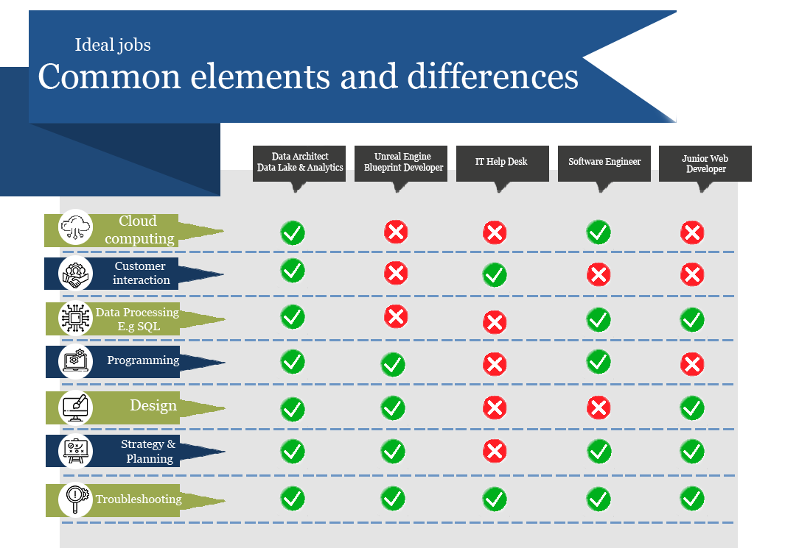

Ideal Jobs
In this section we will compare each member’s chosen ideal job. It will discuss what common elements there are or what differentiates each position from others. Further, it will describe how different the career plans are for the members of the team.
Common Elements
There are several common elements throughout the positions chosen by team Bravo. Although several differences occur, which will be discussed later, the position chosen by Jo and Shay are very customer solution focused and Nathen's, Thomas' and Gianni's positions are very production focused. Further, Nathen and Gianni's ideal jobs both come under the same Job Tile and Occupation of Software Developers/ Engineer. Another interesting fact that gives everyone's jobs a common element is they all come in the top 6 Job Titles (Burning Glass Technologies, 2018).
Other common aspects are specific programming languages requires by more than 1 position, there were of course the most popular languages of Python and Java similarly C#, though Java Script and Linux popped up a couple of times too. There were also several common skills required amongst the chosen positions, this included IT skills such as SQL, Git/ version control and troubleshooting appearing in numerous of the jobs, moreover general skills for instance customer service and communication skills; Problem solving and Project management, teamwork, and organization.
What differentiates each position?
The position most outstanding and unique would-be Jo's ideal job, Data Architect - Data Lake & Analytics. This is a very complex and specialized position, it requires many years of collective experience in several aspects of IT including data analysis and use of many specific tools, the ability to connect with clients and see project from start to finish, overseeing other employees along the process. Shay's choice of IT Help Desk is another that stands out quite remote from all the other positions is the sole purpose of the job relating to customer or client assistance. It is a position that requires a very broad range of knowledge to enable you to carry out the job successfully.
Thomas was the only member to have chosen a 'junior' position, however what further bring his to differentiate from others is that it is web-based, no other position really has a web development aspect to it. An interesting fact about Thomas' and Shay's jobs happened to be ranked the same in each of Job Title demand by employer and in Occupation demand, with Shay's both ranking fifth (5th) and Thomas's ranking at sixth (Burning Glass Technologies, 2018). Nathen's choice in ideal job is quite different as he is very focused on developing games, unlike others focused on systems of computers and devices. However, games are still a software, and so this position comes under the title 'Software Developer' which ranked at number 1 in Australia in 2018 for employer demand.
Gianni's choice of Software Engineer would require much more or specific formal education or training than most other position, although it ranked equal with Nathen as Software Developer / Engineer was recorded as one entity, so also being a number one ranking position. However, being an engineer position, it requires more logical thinking and systematic solution development, which further makes this position distinct.
How similar or different are your career plans across the group?
There are a combination of numerous similarities and differences between the group's ideal job choices. Production focus was an element of three of the jobs, while Customer Focus claimed the other two positions. The three production-focused all come under a title of a developer, however, three very dissimilar sectors, ranging from web to games and one specifies to engineer. Other similarities found amongst the varying job choices were the programming languages required, a few previously specified skills were, seen across a majority of the positions, including the IT specific skills and the general skills required, still each position with a unique set to carry out its own required tasks. Each position had one or more unique factors which were highlighted in the second paragraph, Jo's and Gianni's are likely to be very 'logical thinking' and data analysis heavy careers, whereas Thomas and Nathen share a similarity of a level of creativity required by their positions.
Shay's ideal job would be considered to have broadest range of knowledge and tasks required, however, likely requiring the least formal education training and experience. IT Help Desk is a very high ranked profession in demand from employers (Burning Glass Technologies, 2018). Jo's position is certainly the most involved description, requiring numerous responsibilities from data analytics, data architecture, professional business development and continued training and support for clients (AWS, no date). The choice of a junior position for Thomas was different to the rest of the group, which allows him to focus on the parts of the job he enjoys rather than the extra responsibilities that senior roles attract. Web development is also a relatively straightforward position, similarly, Nathen's game development choice and Gianni choosing Software Engineering, the three are a 'single focus' position. Overall, the positions chosen all have their own purpose and profession.
They share a multitude of skills, education and experience required; However, each job has its own skillset and requirements unique to the position compared to all the others. With the wide selection of occupations, combining the members of team Bravo with their respective job choices, they would make up the best part of an IT Business in collaboration with each other.